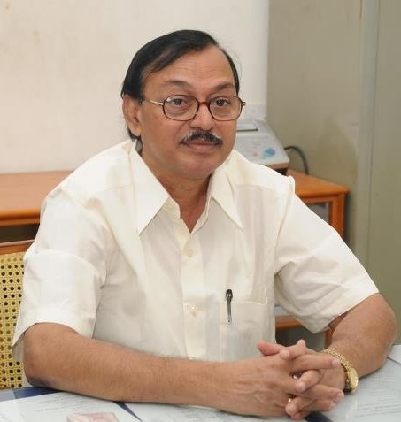

- Sri Venkateswara Degree & PG College, located in Anantapur of Andhra Pradesh, is a self-financing co-educational institute.
- Sri Venkateswara Degree & PG College, located in Anantapur of Andhra Pradesh, is a self-financing co-educational institute. The college was started in the year 1999 to impart quality higher education for the students in and around Anantapur. The college is well-equipped with all necessary infrastructure facilities within a nicely maintained campus. Sri Venkateswara Degree & PG College is affiliated to Sri Krishnadevaraya University. The college offers several undergraduate and post graduate courses in Science and Commerce faculties.
- Affiliated to: Sri Krishnadevaraya University
-
Courses:
- Undergraduate:
The college offers the following undergraduate courses:
- Post Graduate:
The college offers the following post graduate
courses:
- Eligibility:
- Undergraduate:
Candidates who have passed the intermediate/10+2 level examination from the Board of Intermediate Education, Govt. of Andhra Pradesh, or its equivalent, recognized by Sri Krishnadevaraya University in any discipline are eligible for the B.Com course offered here. Those who have completed the same in science subjects are eligible to apply for the B.Sc courses offered here.
- Post Graduate:
Graduates in relevant subject are eligible for the M.Sc/M.Com courses offered here.
Admission Procedure:
- Undergraduate:
Admission of the selected candidates is done on the basis of percentage of marks obtained by them in the 10+2 level and as per the norms of Sri Krishnadevaraya University.
- Post Graduate:
Admission to various post graduate programs is made as per the norms of Sri Krishnadevaraya University.
Facilities:
- Library
- Laboratories
- Computer Lab
- Extra-curricular Activities

Dr.C.Somasekhara Reddy, M.Sc., M.Phil., Ph.D
Founder & Chairman